本地 VSCode 通过 Remote SSH 连接 Vlab¶
虚拟机 Vivado 新建工程和设计文件¶
1. 新建工程¶
在虚拟机的桌面上，最上面应用程序中的 Vlab 实验软件里可找到预先安装的的 Vivado，点击进入 Vivado。这里请大家选择 2019.1 版本，不要选择 2016.3 的旧版本。2023.1 版本的 Vivado 虽然更便捷，但可能引起内存不足的警告，因此请大家酌情使用。
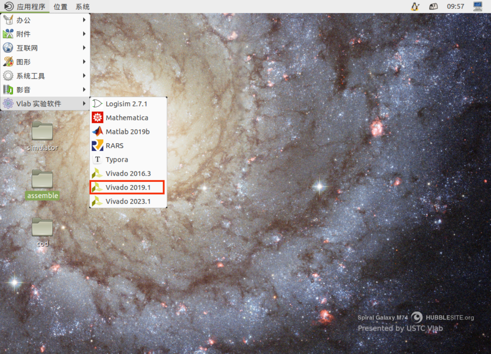
进入 Vivado 后，点击 Create Project:
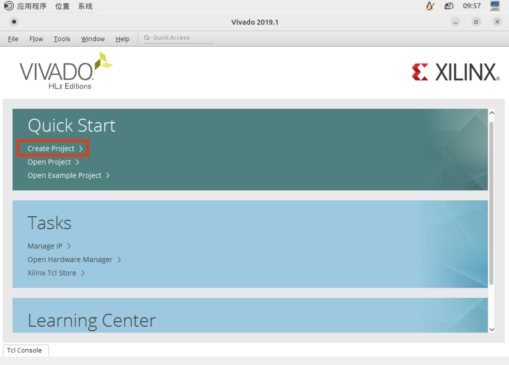
然后点击 Next:
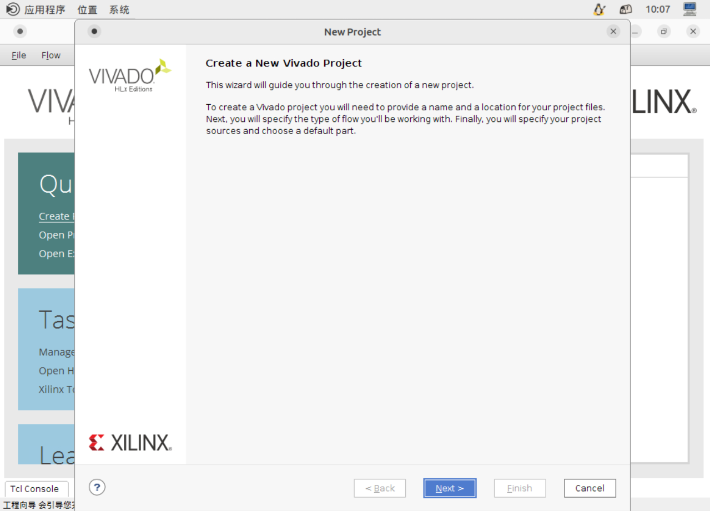
在这个界面，你可以设置工程文件的名称和路径：
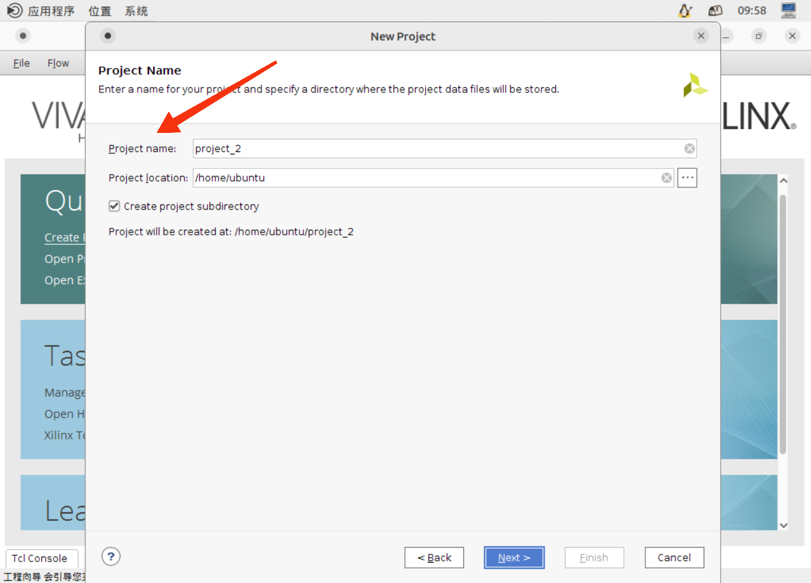
随后一路 Next，直到遇到“选择开发板型号”的界面。搜索我们使用的开发板，型号为 xc7a100tcsg324-1，点击选择最下面的开发板。
注意
此型号是按照往年课程使用的开发板选择的。
若课程安排有所调整，请以实际课程要求开发板型号为准。
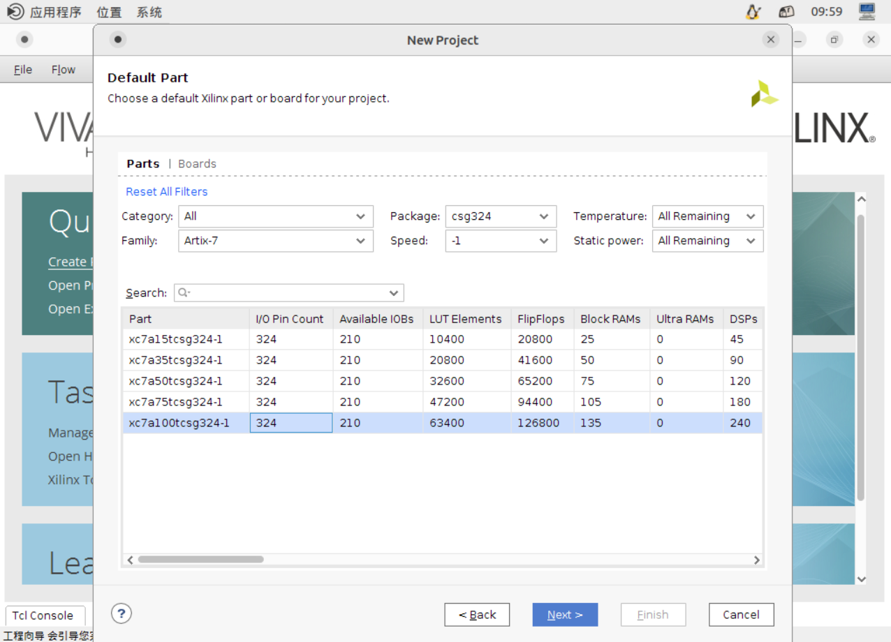
完成后，我们就成功新建了一个工程项目，可以看到如下界面：
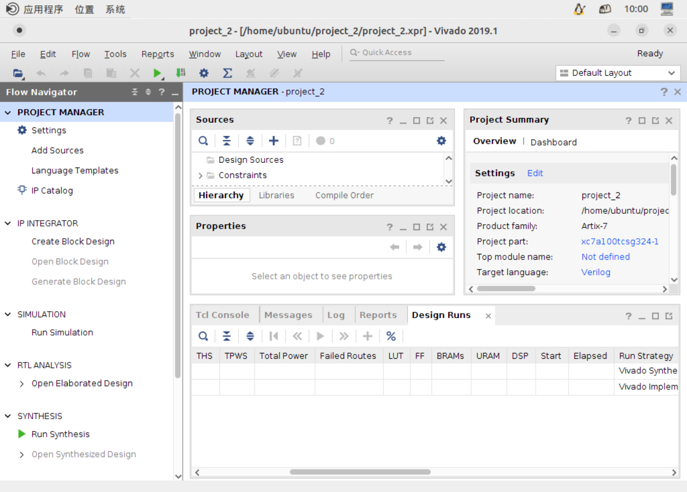
2. 新建设计文件¶
新建工程项目后，里面还没有我们的设计文件，接下来我们要为工程项目新建自己的设计文件。
在界面左侧可以找到 Add Sources，点击它：
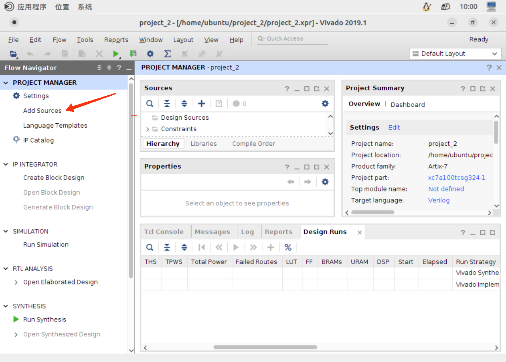
接下来我们开始新建设计文件，点击 Next，选择 Create File:
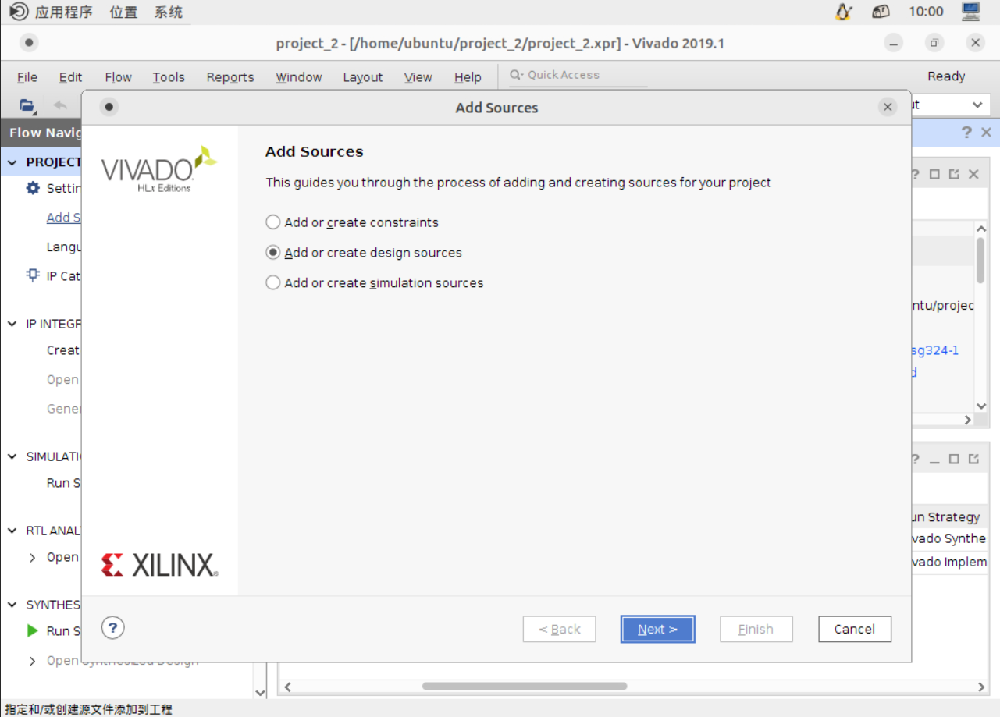
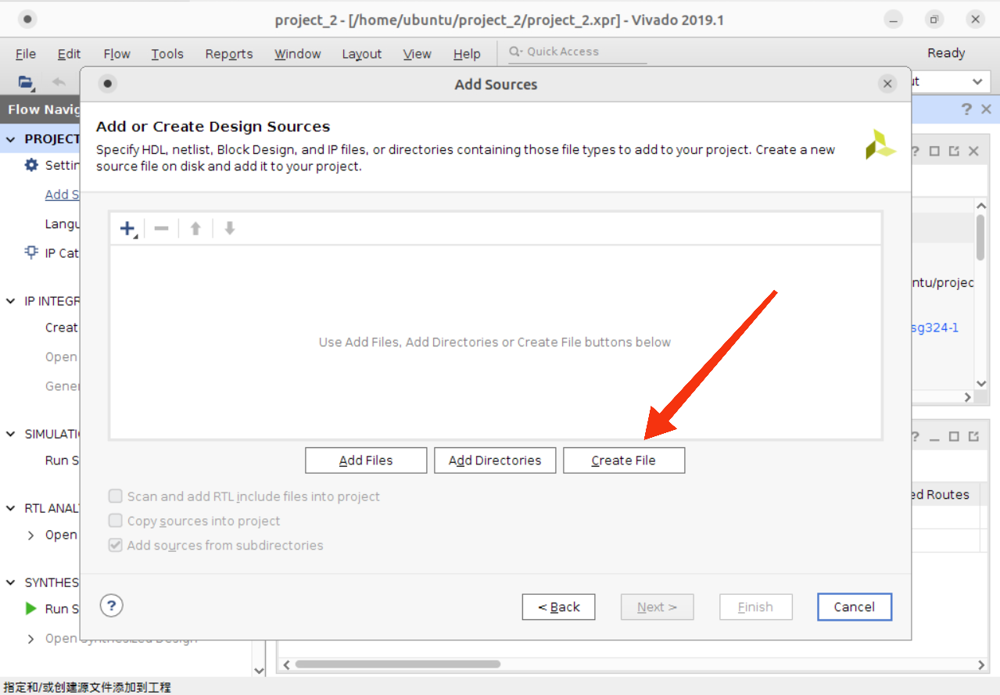
如何把别处的源代码加入此工程项目？
我们在开发时，可能有这种情况：其他位置已经写好了一份设计文件，可以用于此工程，如果在此工程中再新建一份此文件便浪费了时间和空间。我们可以按如下操作把别处的源代码加入此项目：
在新建设计文件时，点击 Create File 左边的 Add Files，便可将其他位置已经写好的设计文件添加到此工程中。点击 Add Directories 可将别处的文件夹中所有设计文件加入此工程。
需要注意的是，这里的“加入”，并不是把原来的设计文件复制一份加入此工程，而是直接加入。也就是说当你在此工程中对该设计文件进行修改时，如果该设计文件也被包含在其他工程中，那么其他工程中的这个设计文件也会被修改。
我们可以自行设置新建文件的名称：
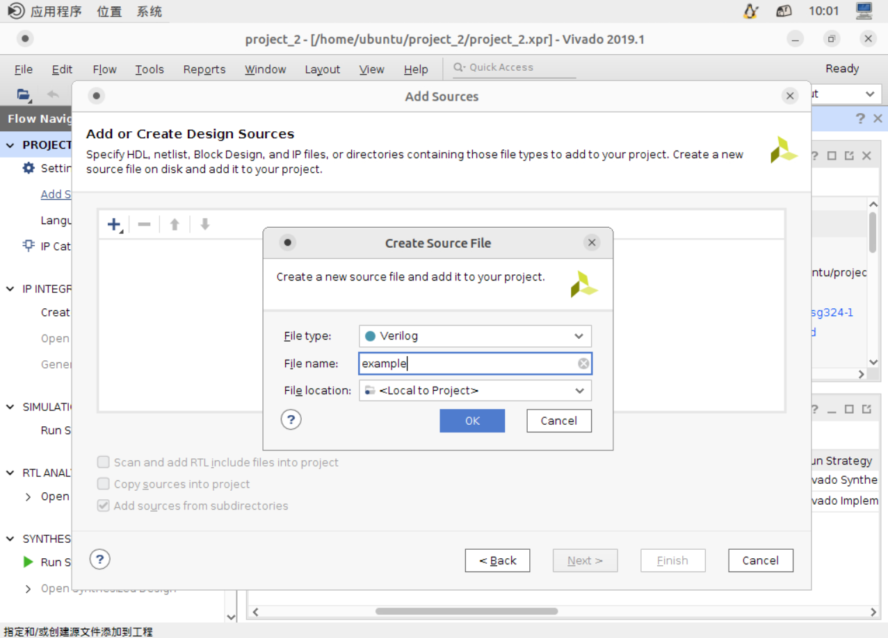
这样，我们就完成了设计文件的新建。双击文件就可以在编辑器中编辑它了。
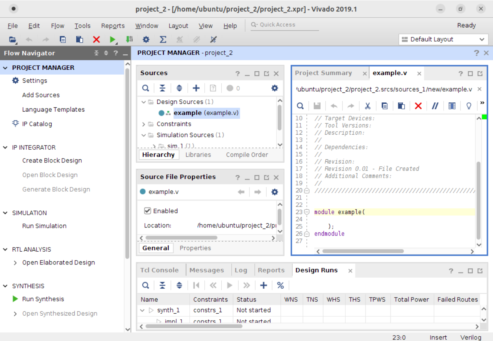
本地安装并配置 VSCode¶
Visual Studio Code 是一款由微软开发的免费、轻量级且可扩展的代码编辑器。它适用于构建 Web、桌面和移动应用，并且支持多种编程语言和框架，具有丰富的扩展功能。下面介绍本地安装和配置 VSCode 的操作。
注意
本文档主要用于数字电路实验教学，介绍了如何配置 VSCode 中 Verilog 相关环境。如需其他编程语言环境配置，请自行学习并操作。
1. 安装 VSCode¶
进入 VSCode 的官方网站，点击 Download for Windows 下载。下载完成后打开可执行文件。在选择附加任务时建议全部勾选，特别是添加到 PATH 要勾选，否则后续还要自己将其添加到环境变量。
注意
为了 VSCode 使用的稳定性，安装路径不要包含中文。下面要讲的 ctags 和 iverilog 同理，安装路径也要避免中文。
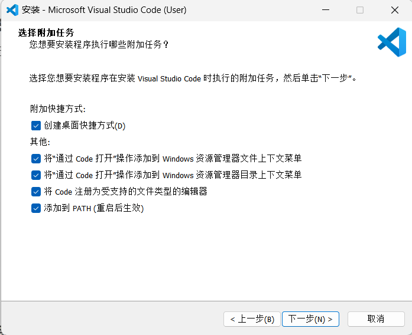
在我们完成了 VSCode 的安装后，第一次打开时界面是纯英文，看起来不是很方便。对此我们可以找到左侧的 Extensions 点开，搜索 Chinese，安装第一个“中文（简体）”然后重启 VSCode 即可汉化 VSCode。
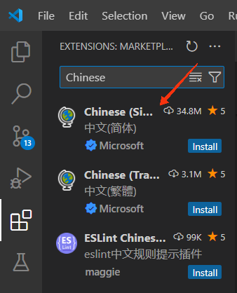
2. 安装 Verilog-HDL/SystemVerilog 插件¶
在汉化 VSCode 后，想必大家已经会在 VSCode 中搜索并安装插件了。对于 Verilog 的开发，我们需要安装 Verilog-HDL/SystemVerilog 插件。
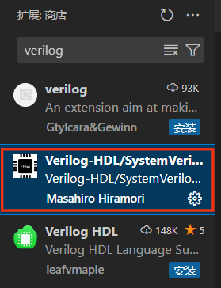
这个插件提供了 Verilog 开发的大多数基础功能，包括：
- 代码高亮
- 简单语法补全提示
- 静态语法检查（需要自行配置 linter）
- Ctags 功能集成（需要额外安装 ctags 组件）
- 自动补全
- 文档符号大纲
- 鼠标悬停显示代码声明
- Ctrl 鼠标点击跳转到代码声明
3. 安装 iverilog 和 ctags¶
目前我们已经安装了 Verilog-HDL/SystemVerilog 插件，但还需要安装 iverilog（一种 linter）和 ctags。
关于 linter
Linter 是自动检查源代码中是否存在编程和样式错误的工具。对于 Verilog 的 linter 当然不止一种，本教程中使用的是 iverilog。除此之外还有 xvlog 和 Verilator，但 xvlog 来自于 Vivado，你需要在电脑本地安装 Vivado 才有 xvlog。而 Verilator 则是面向 Linux 平台开发的，截至目前使用官网方法在 Windows 平台上编译的 Verilator 都无法配合 VSCode 完成代码检查，需要在子系统 WSL 中安装并运行 Verilator，这里不再介绍具体步骤。
我们进入 iverilog 的下载网站，在 Download 中下载最新版本即可。安装时在 Select Components 界面全部勾选，然后勾选可执行文件所在文件夹加入用户路径。
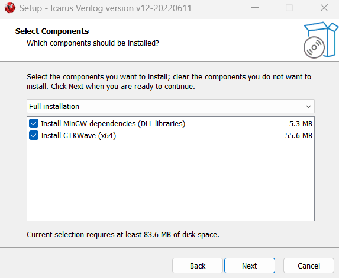
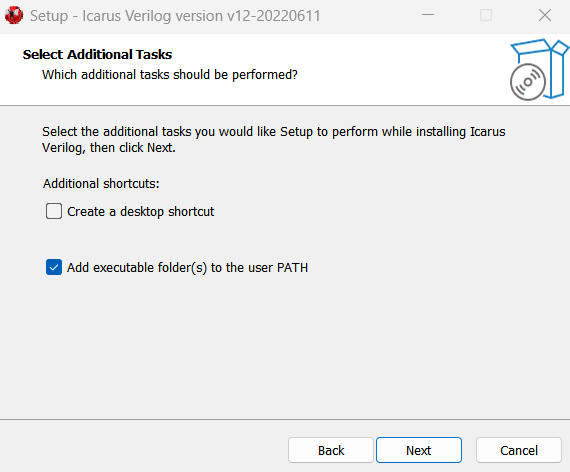
安装后将 iverilog.exe 和 gtkwave.exe 所在文件夹的路径复制加入用户环境变量。
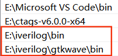
如何添加环境变量
设置 -> 系统 -> 系统信息 -> 高级系统设置 -> 环境变量 -> 在上方的“用户变量”中找到 Path 一栏，双击进入，点击新建即可添加环境变量。
然后在命令行中输入以下命令检查 iverilog 是否安装成功：
iverilog -help
出现以下信息说明安装成功：
Usage: iverilog [-EiSuvV] [-B base] [-c cmdfile|-f cmdfile]
[-g1995|-g2001|-g2005|-g2005-sv|-g2009|-g2012] [-g<feature>]
[-D macro[=defn]] [-I includedir] [-L moduledir]
[-M [mode=]depfile] [-m module]
[-N file] [-o filename] [-p flag=value]
[-s topmodule] [-t target] [-T min|typ|max]
[-W class] [-y dir] [-Y suf] [-l file] source_file(s)
See the man page for details.
再输入以下命令检查 gtkwave 是否安装成功：
gtkwave
弹出这个软件则配置成功。
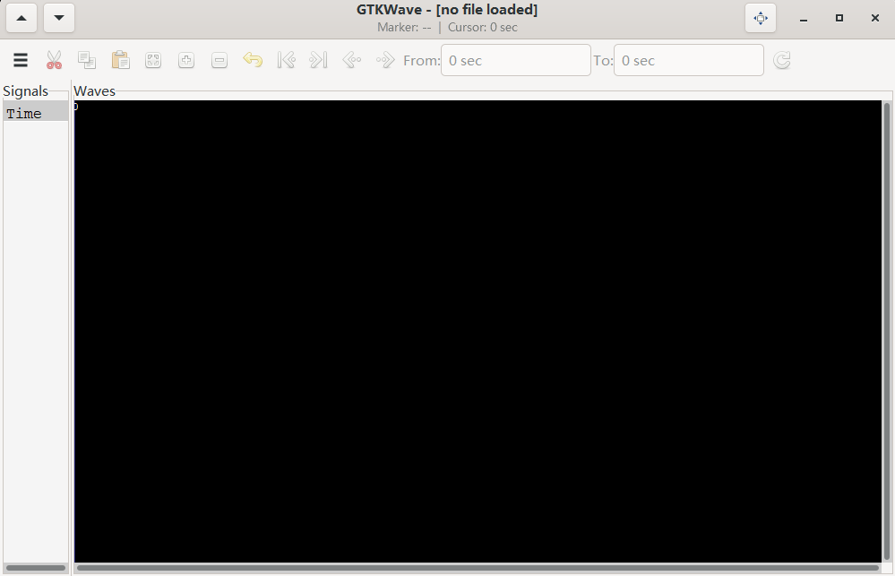
接下来我们进入下载页面安装 ctags，可选择最新版本进入下载。
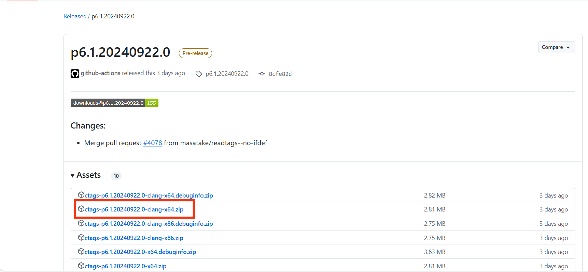
ctags 无需安装，解压后同样将 ctags.exe 所在文件夹路径复制加入环境变量即可。
检查 ctags 是否能够运行：
ctags --version
显示的 ctags 信息是 universal ctags，说明安装正常。
4. 配置 Verilog-HDL/SystemVerilog 插件¶
在安装好 iverilog 和 ctags 后，我们要将其配置到到 Verilog-HDL/SystemVerilog 插件中。在已安装的插件中找到 Verilog-HDL/SystemVerilog，点击“管理”，打开“扩展设置”。
按下面的设置配置 ctags，将 linter 选择为 iverilog，并在 iverilog 的 Argument 一栏中加入 -i 参数。

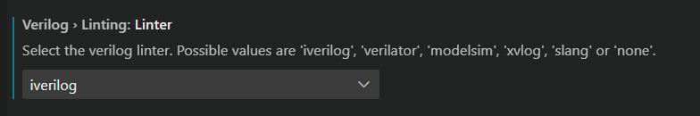
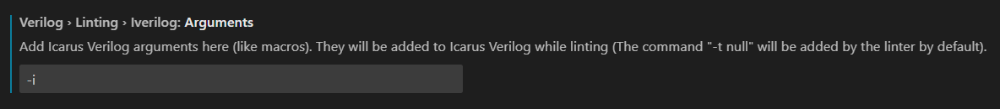
关于配置的说明
由于在安装 ctags 时已经将其加入到了环境变量，所以这里只需填入 ctags 即可。关于 -i 参数，是因为在实例化模块时 iverilog 会报错 "Unknown module type"，添加 -i 参数可以避免这种不合理的报错。
这样我们就可以在 VSCode 中进行 Verilog 的开发了！
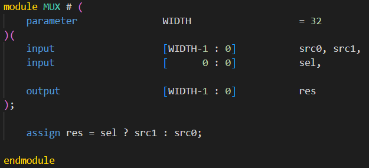
提示
在用 VSCode 编写 Verilog 代码时，只有将文件保存后才会进行语法检查哦！
本地安装 SSH 环境¶
在 Windows 系统中，OpenSSH 客户端和 OpenSSH 服务器是可单独安装的组件：OpenSSH 客户端可以使用 ssh 命令连接到其他支持 SSH 的设备，而 OpenSSH 服务器允许其他设备通过 SSH 连接到你的电脑。 Windows 用户应使用以下说明来安装和配置 OpenSSH。
在命令行中输入 ssh，若输出以下信息则已经安装，可跳过安装步骤。
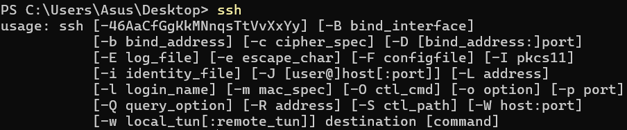
Windows 10 和 Windows 11
Windows 10 和 Windows 11 版本的 OpenSSH 安装有所区别，请按对应的版本进行操作。
在安装时， Windows 10 用户在 设置 -> 应用 -> 应用和功能 -> 可选功能 -> 添加功能 中搜索 OpenSSH; Windows 11 用户在 设置 -> 系统 -> 可选功能 -> 查看功能 中搜索 OpenSSH，进行安装。
说明
我们只需安装 SSH 客户端便可远程连接虚拟机了，关于 SSH server 的配置这里不再细讲。如果要开启 SSH server 服务允许其他设备用 SSH 连接到你的电脑上，需要开启防火墙的 22 端口。
然后我们就可以开始通过 SSH 远程连接 Vlab 了！
说明
在安装「OpenSSH 客户端」功能后，如果在命令行中输入 ssh 仍然提示无法找到命令，可以尝试将 C:\Windows\System32\OpenSSH\ 加入环境变量，具体操作请参考上方配置 iverilog 和 ctags 的部分。
SSH 通过命令行远程连接 Vlab¶
1. SSH 连接 Vlab¶
我们以 Vlab 的 ubuntu 用户为例，打开本地命令行，输入命令：
ssh ubuntu@vlab.ustc.edu.cn
如果遇到 Warning，请输入 yes，然后根据提示输入 Vlab 平台的用户名和密码，即可登录虚拟机。
Vlab 的登录用户名？
这里请参考SSH 命令行登录页面的登录用户名章节。
在断开与虚拟机的连接时输入 exit 即可。
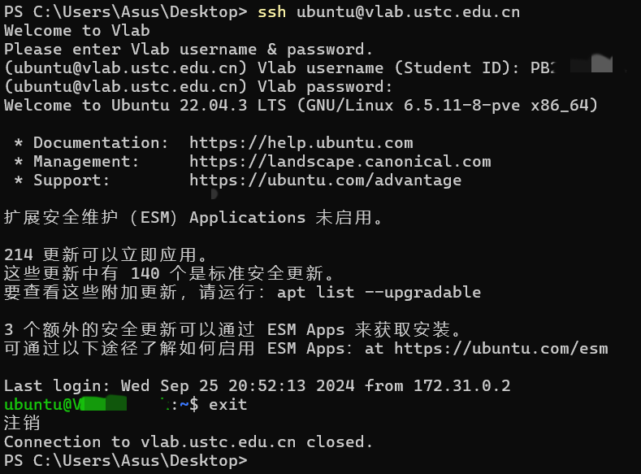
2. 使用公钥登录虚拟机¶
使用公钥登录虚拟机可以免除每次输入密码的麻烦，我们首先要生成密钥对并下载到本地。
这里下载密钥对的操作请参考SSH 命令行登录页面的生成 SSH 密钥对并下载到本地章节。
我们将私钥放在 %UserProfile%\.ssh 目录中，例如 %UserProfile%\.ssh\vlab.pem。
注意
本教程中该文件命名为 vlab.pem，如自行命名请在下面对应的步骤中修改相应配置。
什么是 %UserProfile%
%UserProfile% 是用户目录，即 C:\Users\用户名。vlab.pem 文件的完整路径例如 C:\Users\Asus\.ssh\vlab.pem。
要确保只有你的账户有访问私钥文件的权限，否则可能出现 "Permissions are too open" 报错。具体操作如下：
右键单击 .pem 文件，进入属性 -> 安全 -> 高级，可以看到以下界面。
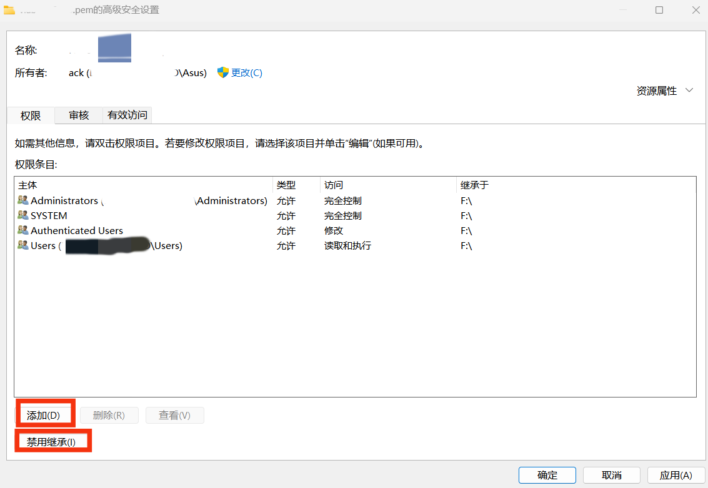
然后将所有者改为个人用户（如果已经是则不用改），并且删除掉其他用户的权限（如果这里因为继承权限无法删除，则要先点击"禁用继承"）。如果在权限条目中没有个人用户，则需手动添加：在点击"添加"后点击"选择主体"，然后指定对象类型为"用户"，点击"高级"，开始立即查找，便可找到个人用户。将其权限设置为"完全控制"，确定添加即可。
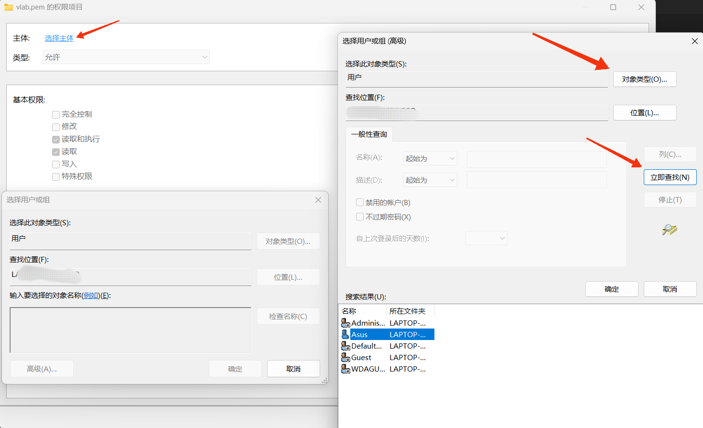
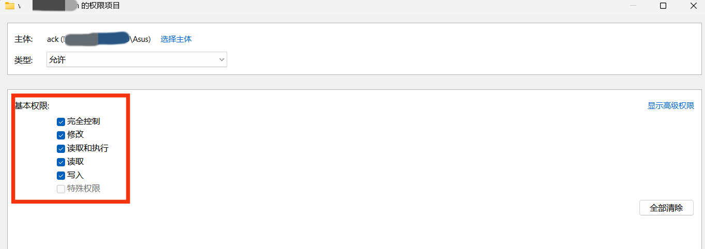
最后设置完毕如下：
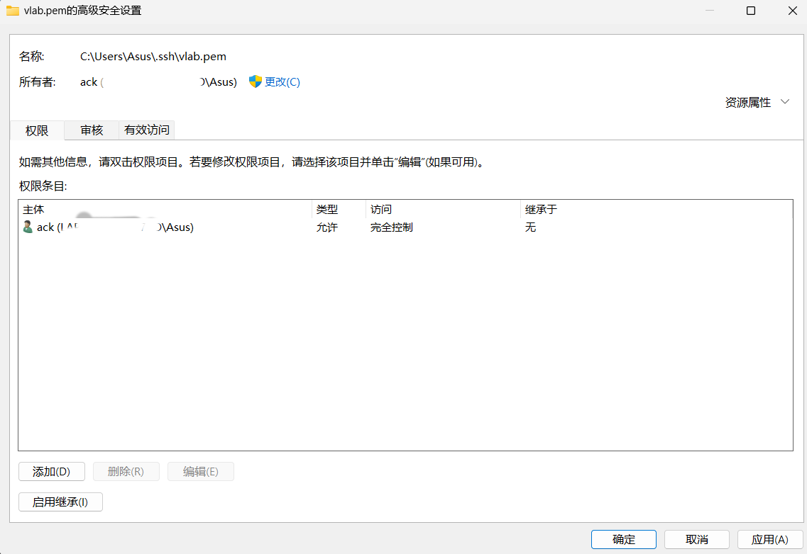
修改权限后，可以在 CMD 或 PowerShell 中使用 ssh 命令登录：
ssh -i %UserProfile%\.ssh\vlab.pem ubuntu@vlab.ustc.edu.cn
这样我们通过 SSH 登录虚拟机就不用输入用户名和密码了。
3. 使用配置文件登录虚拟机¶
我们在 C 盘个人用户中的 .ssh 文件夹里新建文件 config（无后缀名），用记事本打开后输入以下内容：
Host vlab
HostName vlab.ustc.edu.cn
User ubuntu
IdentityFile %UserProfile%\.ssh\vlab.pem
路径
如果你在上一步中按照教程放置 .pem 文件的位置，这里 config 文件应与其在同一个文件夹下。
此后我们在命令行中输入 ssh vlab 即可登录虚拟机，这样十分方便，而且支持了后面要讲的 VSCode 中使用 Remote SSH 功能。
本地 VSCode 通过 SSH 登录 Vlab¶
接下来我们在 VSCode 中通过 SSH 登录 Vlab。首先在 VSCode 中安装扩展 Remote - SSH。
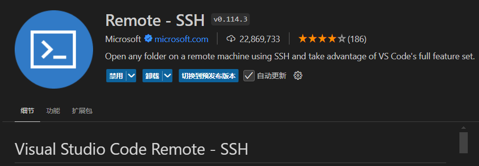
安装后在左侧会出现远程资源管理器。如果前面已经按照教程配置好了 SSH，可以看到我们的虚拟机 Vlab。
注意
请先按照上面的教程进行 SSH 配置，实现公钥登录并完成配置文件。
点击 vlab 右侧的图标，在现有的窗口/新窗口中连接 Vlab。在选择远程平台时选择 Linux。
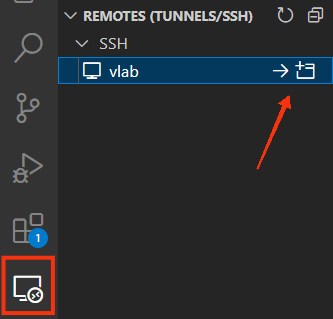
首次连接时会显示“正在下载 VSCode 服务器”。这是正在 Vlab 虚拟机上安装 VSCode 服务器，时间可能比较长，请耐心等待。
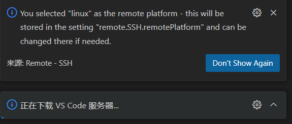
下载好后，左下角显示 SSH:vlab 即连接成功。
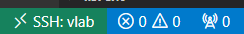
在上方的文件->打开文件夹即可选择要打开的 Vlab 上的文件夹，新建文件同理。
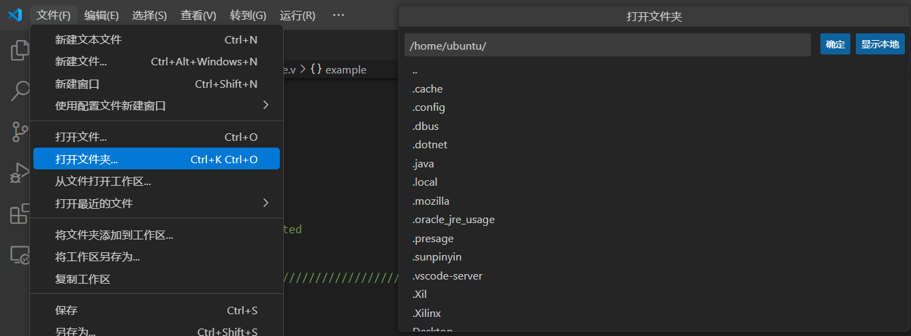
我们也可以用快捷键 Ctrl + ` 打开终端，此时的终端环境是 Vlab 的，可以通过命令行对 Vlab 进行操作。
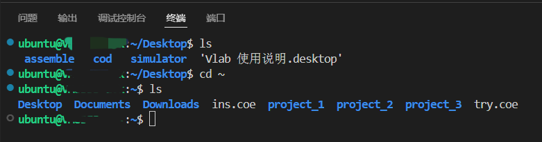
本地 VSCode 编辑 Vlab 的 Verilog 项目¶
截至目前，我们已经能用本地 VSCode 远程编辑 Vlab 上的文件了。但当我们用 VSCode 打开 Vlab 中新建的 .v 文件时，却发现没有了语法高亮。这是因为 Verilog-HDL/SystemVerilog 扩展被定义为在远程扩展主机中运行，故在此工作区中被禁用。我们需要在本地已安装的扩展中找到 Verilog-HDL/SystemVerilog，点击在 SSH:vlab 中安装，来启用该扩展。
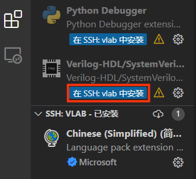
然后我们的 Verilog 代码就有了语法高亮。但当我们编写代码时，会发现前面配置好的 ctags 和 iverilog 失效了：鼠标悬停不显示代码声明，“CTRL 鼠标点击跳转到代码声明”的功能失效，代码的语法错误也不会报错。
为什么？
这是因为此时的 Verilog-HDL/SystemVerilog 插件使用的是 Vlab 中安装的，所以需要对 SSH:vlab 中的该插件进行同本地的配置。
我们要在 Vlab 中安装 ctags 和 iverilog（和 gtkwave）。在 Vlab 虚拟机 中打开终端，执行以下命令：
sudo apt update
sudo apt install iverilog gtkwave universal-ctags
然后在 VSCode 已打开的远程连接 Vlab 中打开 Verilog-HDL/SystemVerilog 的扩展设置，将远程 [SSH:vlab]和工作区中同本地配置（即“用户”一栏中的配置）进行设置。
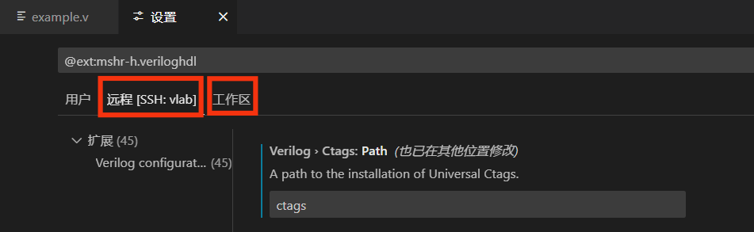
完成后，我们就可以在本地 VSCode 对 Vlab 中的 Vivado 设计文件进行编辑了！
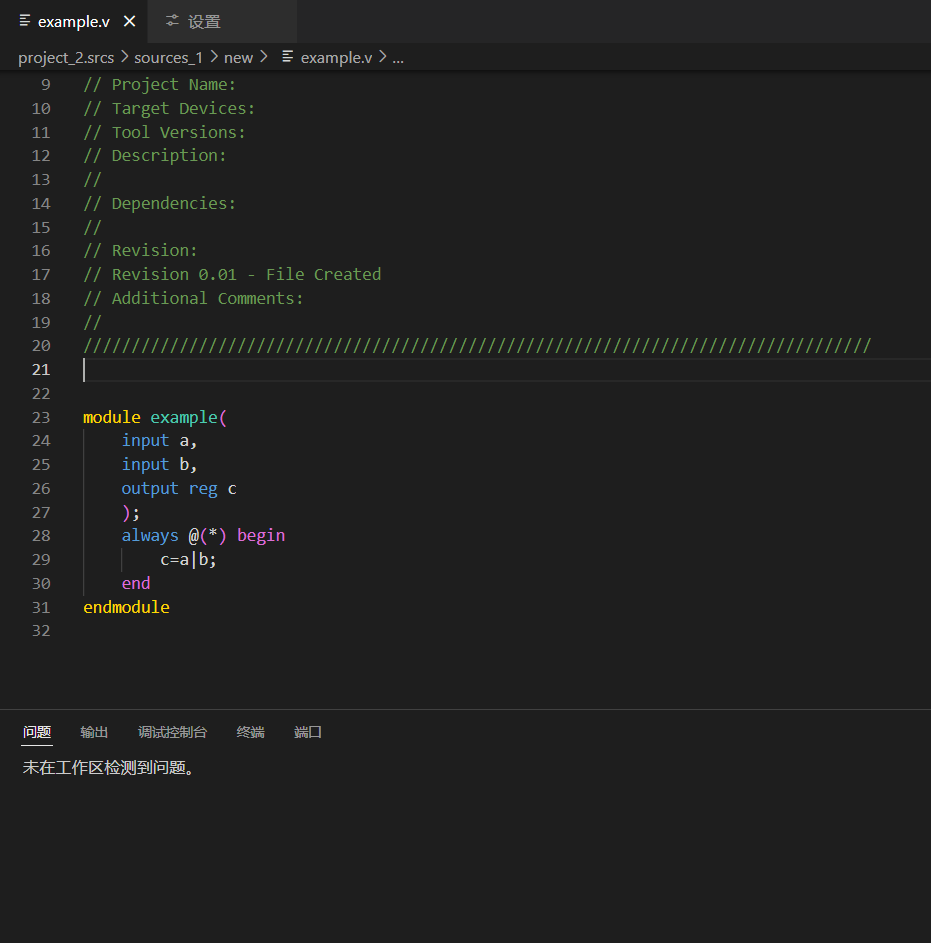